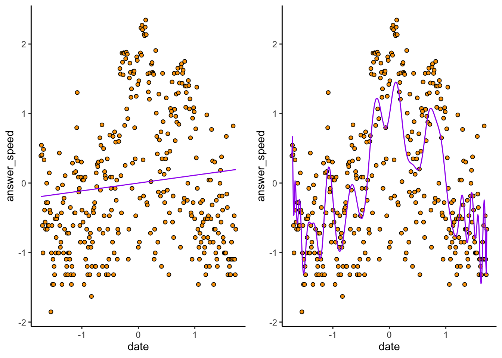

Chapter 12 Predictive Modelling
This chapter is a supplementary tutorial on predictive modelling for STA238. The readings on this topic are An Introduction to Statistical Learning with Applications in R (ISLR), sections 2.1, 2.1.1, 2.2, 2.2.1, and 2.2.2; and Probability and Statistics: the Science of Uncertainty, section 7.2.4. The former has an overview of predictive modelling; the latter treats the Bayesian perspective.
12.1 Overview
Up to this point in the course, we have been focussing on data analysis and inference. Analyzing the specific data that you have available helps answer the question “what happened?”. Combining the available data with computational and mathematical modelling helps answer the question “what can be learned about the world, based on what happened?”.
Predictive modelling focusses on answering “what is going to happen next?”. While the former two questions are of primary scientific interest, modern data science in business and industrial practice is often concerned with making predictions about what kind of data will be seen in the future. Predictive modelling, which is itself a science, is applied to address this question.
Often, the point estimates we get from our inferential procedures are themselves predictions. For example, we built a regression model of TTC ridership revenue over time back in chapter 4 of these supplementary notes. We inferred the slope of the regression line of revenue across years– but we could also use this line to make predictions for future years by simply extending the line to the year we want, and reading off its value.
However, when measuring the uncertainty in our predictions, the situation is different. When doing inference, we have one source of uncertainty that we choose to address: the variability in the data. If we sampled the dataset again, we would get different inferences, and so on. In prediction, we have two sources of uncertainty: that from the model that we use for prediction, which we inferred from the data and hence is subject to variability; and that from the act of sampling a new datapoint from this model.
ISLR referrs to these two sources of error as reducible and irreducible. We can always make our inferences less uncertain in theory by getting more data (reducibile uncertainty), but even if we knew the underlying data-generating mechanism perfectly, its output is still random (irreducible uncertainty)!
In fact: recall we measured the quality of an estimator \(\hat{\theta}\) of a parameter \(\theta\) using the Mean Squared Error (MSE): \(\mathbb{E}(\hat{\theta} - \theta)^{2}\). The analagous concept in prediction is the Mean Square Prediction Error (MSPE). Suppose we use some function \(\hat{Y} \equiv \hat{Y}(Y_{1},\ldots,Y_{n})\) to predict a new \(Y_{n+1}\) using a random sample \(Y_{1},\ldots,Y_{n}\), where \(Y_{i}, i = 1\ldots n+1\) are drawn IID from the same (unknown) distribution. Then define: \[\begin{equation} MSPE(\hat{Y}) = \mathbb{E}(\hat{Y}_{n+1} - Y_{n+1})^{2} \end{equation}\] ISLR (page 19) makes an argument that in the simple model \(Y = \theta + \epsilon\) where \(\epsilon\) is a zero-mean “noise” random variable which is independent of both \(Y_{n+1}\) and \(\hat{Y}_{n+1}\) and \(\hat{\theta}\) is an unbiased estimator of \(\theta\), that \[\begin{equation}\begin{aligned} MSPE(\hat{Y}) &= \mathbb{E}(\hat{\theta} - \theta)^{2} + \mathbb{E}(\epsilon^{2}) \\ &= MSE(\hat{\theta}) + \text{Var}(\epsilon) \end{aligned}\end{equation}\]
Exercise: prove this formula. Hint: look at what ISLR does, figure out the differences in notation between us and them, and fill in the details.
The key takeaway is that the prediction error comes from two sources: error in inferring the underlying data-generating mechanism, and error in drawing new data from this mechanism.
12.2 Plug-in prediction: coin flipping
To illustrate the idea of multiple sources of error, let’s briefly revist our now-classic coin flipping example. We are going toThis is an example of a classification problem: we are predicting a binary event, something that either happens or it doesn’t. We’re either completely right, or completely wrong. Note that the MSPE here has a special form, because \(|\hat{Y} - Y| \in \left\{ 0,1 \right\}\).
Exercise: show that the MSPE here is equal to the probability of making an incorrect prediction.
First let’s draw a sample. We’ll leave the parameters to be specified at the top of the program so you can play around with them:
set.seed(87886)
n <- 10 # Number of flips
p0 <- 0.5 # True probability of heads
# Draw the sample
samp <- rbinom(n,1,p0)
samp## [1] 1 0 0 0 1 0 1 0 0 1We have drawn \(n = 10\) samples from a \(\text{Bernoulli}(p)\) distribution with parameter \(p = 0.5\). If \(Y_{i}\) is a \(0/1\) indicator of the \(i^{th}\) toss being heads, the likelihood function for \(p\) is given by: \[\begin{equation} L(p) = p^{\sum_{i=1}^{n}Y_{i}}(1-p)^{n - \sum_{i=1}^{n}Y_{i}} \end{equation}\]
Exercise (review): show that the maximum likelihood estimator is \(\hat{p} = \frac{1}{n}\sum_{i=1}^{n}Y_{i}\), the sample proportion of heads.
We can compute the MLE for our sample:
## [1] 0.4How to use this to make predictions? We need a rule—a function \(\hat{Y}\)—that takes in our sample and predicts the next value. This construction is very similar in spirit to constructing an estimate of a parameter; we want something that makes intuitive sense and that has “desirable” statistical properties.
It can be shown that the prediction rule that minimizes the MSPE for this simple case of binary prediction is to simply predict the outcome (heads or tails, 0 or 1) that is the most probable under our estimated model. Our inferred model ascribes a \(40\%\) chance of heads and \(60\%\) chance of tails to each flip, so our prediction rule (for this sample) is simply \(\hat{Y} = 0\).
Exercise: suppose that \(p_{0} = \hat{p} = 0.4\), that is, suppose we were able to perfectly infer the value of \(p\) based on our sample and hence incur no model error. Show that the MSPE for our prediction rule is \(\mathbb{E}(\hat{Y} - Y)^{2} = p_{0} = 0.4\).
Exercise (challenge): now suppose that the true value of \(p\) is \(p_{0} = 0.5\) (which it actually is, in our simulation). Show that the MSPE of our prediction rule equals \(0.5\) when you incorporate the model error into the calculation. Hint: recall the “tower property” of expectation: for any two random variables \(X,Y\), \[\begin{equation} \mathbb{E}(X) = \mathbb{E}_{Y}\mathbb{E}_{X|Y}(X) \end{equation}\] That is, you can first take the expectation with respect to one random variable conditional on another, and then take the expectation of this expression with respect to the second random variable. Use this to separate the model variability from the sampling variability.
Let’s assess the MSPE using a prediction. We’re going to repeat the following procedure a bunch of times:set.seed(874327086)
n <- 10 # Number of flips
p0 <- 0.5 # True probability of heads
B <- 1000 # Number of simulations to do
do_simulation <- function(n,p) {
pmle <- mean(rbinom(n,1,p)) # Compute the MLE
newy <- rbinom(1,1,p) # Draw a new value from the true distribution
if (pmle >= 0.5) {
predy <- 1 # Predict 1 if pmle >= 0.5
} else {
predy <- 0
}
(predy - newy)^2
}
# Do the simulation
sim_mspe <- 1:B %>%
map(~do_simulation(n = n,p = p0)) %>%
reduce(c) %>%
mean()
sim_mspe## [1] 0.498Notice that it is close to \(0.5\), not \(0.4\)– the model error matters, as you saw in the above theoretical exercise. Actually, to drive this point home…
Exercise: what did I do differently in the below code, compared to the above?
set.seed(874327086)
n <- 10 # Number of flips
p0 <- 0.5 # True probability of heads
B <- 1000 # Number of simulations to do
do_simulation <- function(n,p) {
pmle <- mean(rbinom(n,1,p)) # Compute the MLE
newy <- rbinom(1,1,pmle) # Draw a new value from the true distribution
if (pmle >= 0.5) {
predy <- 1 # Predict 1 if pmle >= 0.5
} else {
predy <- 0
}
(predy - newy)^2
}
# Do the simulation
sim_mspe2 <- 1:B %>%
map(~do_simulation(n = n,p = p0)) %>%
reduce(c) %>%
mean()
sim_mspe2## [1] 0.389Figure out why it’s lower, computationally (what did I do differently in the code), mathematically (relate it to the above exercises), and intuitively (explain in words what the difference is).
12.3 Bayesian Prediction: coin flipping
We saw above that making predictions using our frequentist-inferred models for the observed data wasn’t that complicated (just “plug in” the inferred model parameters), but assessing the uncertainty in the predictions was challenging because the uncertainty comes from multiple different sources, and it is not always clear how to effectively combine these.
One more systematic way to quantify the uncertainty in a prediction, conditional on the observed sample is, well, to literally do this, via the conditional distribution \(\pi(Y_{n+1}|Y_{1},\ldots,Y_{n})\). The mean of this distribution says “what will happen on average, given what we have observed?”, and the standard deviation of this distribution quantifies how close future values are to be concentrated around this mean, which seems like a perfectly reasonable measure of the uncertainty in a prediction.
So what’s the problem? If we’re in the frequentist paradigm, there is a big one: the data are IID! So \(Y_{n+1}\) is statistically independent of \(Y_{1},\ldots,Y_{n}\), and \[\begin{equation} \pi(Y_{n+1}|Y_{1},\ldots,Y_{n}) = \pi(Y_{n+1}) \end{equation}\] Under this paradigm, the sample provides no information about the distribution of a new datapoint.
In the Bayesian paradigm, things are a bit different. Following Evans and Rosenthal Section 7.2.4, we consider the posterior predictive distribution: \[\begin{equation} \pi(Y_{n+1}|Y_{1},\ldots,Y_{n}) = \int_{0}^{1}\pi(Y_{n+1}|p)\pi(p|Y_{1},\ldots,Y_{n})dp \end{equation}\] where \(\pi(p|Y_{1},\ldots,Y_{n})\) is the posterior distribution of \(p\) given the sample, and \(\pi(Y_{n+1}|p)\) is simply the likelihood for each value of \(p\), and for a single datapoint.
This has the following attractive properties:Let’s see what this looks like for the coin flipping example. Recall the setup: we use a \(\text{Beta}(\alpha,\beta)\) prior for the parameter \(p\), which leads to the posterior: \[\begin{equation} \pi(p|Y_{1},\ldots,Y_{n}) = \text{Beta}\left(n\bar{Y} + \alpha,n(1 - \bar{Y}) + \beta\right) \end{equation}\] Evans and Rosenthal derive the posterior predictive distribution using messier, but similar algebra to how we derived the posterior: \[\begin{equation} Y_{n+1} | Y_{1},\ldots,Y_{n} \sim \text{Bernoulli}\left(\frac{n\bar{Y} + \alpha}{n + \alpha + \beta}\right) \end{equation}\] Exercise: derive the formula for the posterior predictive as reported by Evans and Rosenthal.
We use the posterior predictive mode for prediction. Since the posterior predictive distribution is only defined at two values, \(0\) and \(1\), the mode is simply whichever value has the higher posterior predictive density.
Exercise: prove Evans and Rosenthal’s formula for the posterior predictive mode: \[\begin{equation} \hat{Y}_{n+1} | Y_{1},\ldots,Y_{n} = \begin{cases} 1 \ \text{if} \ \frac{n\bar{Y} + \alpha}{n + \alpha + \beta} \geq \frac{n(1-\bar{Y}) + \beta}{n + \alpha + \beta} \\ 0 \ \text{else} \end{cases} \end{equation}\] Hint: start by writing out the Bernoulli density.
How does the use of the posterior predictive mode do in terms of MSPE? Consider the setup from chapter 11 of these supplementary notes, where we put a \(\text{Beta}(12,12)\) prior on \(p\). Let’s simulate the MSPE again, but using this for prediction:
set.seed(874327086)
n <- 10 # Number of flips
p0 <- 0.5 # True probability of heads
alpha <- 12 # Prior
beta <- 12 # Prior
B <- 1000 # Number of simulations to do
do_simulation_bayes <- function(n,p) {
pmle <- mean(rbinom(n,1,p)) # Compute the MLE
newy <- rbinom(1,1,p) # Draw a new value from the true distribution
postparam <- (n * pmle + alpha) / (n + alpha + beta)
if (postparam >= (1 - postparam)) {
predy <- 1 # Predict 1 if postparam >= (1 - postparam) (i.e. postparam >= 0.5)
} else {
predy <- 0
}
(predy - newy)^2
}
# Do the simulation
sim_mspe_bayes <- 1:B %>%
map(~do_simulation_bayes(n = n,p = p0)) %>%
reduce(c) %>%
mean()
sim_mspe_bayes## [1] 0.498Notice anything odd about these results compared to what we got using the frequentist approach?
It turns out that if the prior is symmetric (\(\alpha = \beta\)), then the posterior mode exactly equals the prediction rule we obtained by minimizing the MSPE. If the prior is not symmetric, they won’t be the same– so which do you expect to be better?
12.4 Extended example: predicting call centre wait times
The coin-flipping example is illustrative, but too simple to be interesting. For a given dataset, we either predict heads, or tails, the same for all future coins!
For a more interesting example, we’ll fit a curve to Toronto 311 contact centre wait times. We’ll use a minor extension of the linear regression we saw in chapter 4 of these supplementary notes. It’s more important to focus on what we’re doing (prediction) than how we’re doing it (linear regression with polynomials). Materials in this tutorial are taken from the (much) more advanced tutorial by Alex on this stuff, here.
311 is a service operated by the City of Toronto in which residents can call (dial *311) and submit service requests for things like potholes, excess garbage pickup, downed trees, and so on. People call in to the service and speak to an actual human being in a contact centre. When you call, sometimes you have to wait.
Data on the daily average wait time for such calls for the period from December 28th, 2009 to January 2nd, 2011 is available from Open Data Toronto here, and stored on github by us for your use.
Let’s read in and visualize the data:
# Read data
contactdat <- readr::read_csv(
file = "https://media.githubusercontent.com/media/awstringer1/leaf2018/gh-pages/datasets/contact-centre.csv",
col_names = TRUE,
col_types = "cd") %>%
mutate_at("date",lubridate::mdy)
glimpse(contactdat)## Observations: 371
## Variables: 2
## $ date <date> 2009-12-28, 2009-12-29, 2009-12-30, 2009-12-31, 20…
## $ answer_speed <dbl> 55, 67, 56, 15, 9, 62, 51, 20, 16, 14, 23, 33, 14, …contactdat %>%
ggplot(aes(x = date,y = answer_speed)) +
theme_classic() +
geom_point(pch = 21,colour = "black",fill = "orange") +
labs(title = "Average Wait Time by Day, Toronto 311 Contact Centre",
x = "Date",
y = "Wait Time")Woah! That spike in wait times in July is terrible. If we were analyzing these data with the intent of informing any actual policy, we would contact the 311 office and ask what the heck happened there before proceeding.
Let’s proceed. To mitigate the drastic spike, consider a log transformation of
the answer_speed:
contactdat %>%
ggplot(aes(x = date,y = log(answer_speed))) +
theme_classic() +
geom_point(pch = 21,colour = "black",fill = "orange") +
labs(title = "Average Wait Time by Day, Toronto 311 Contact Centre",
x = "Date",
y = "log(Wait Time)")There’s a lot of variance, but it looks like there might be a kind of quadratic trend.
Recall the simple linear model from Chapter 4 of these supplementary notes: \[ y_{i} = \beta_{0} + \beta_{1}x_{i} + \epsilon_{i} \] where \(y_{i}\) is the average wait time on the \(i^{th}\) date, \(x_{i}\) is a suitable numerical value for the \(i^{th}\) date (e.g. number of days since some reference point), and \(\epsilon_{i} \sim N(0,\sigma^{2})\) is the error of the \(i^{th}\) observation about its mean. Because it looks like the trend in the data might be quadratic, not linear, we can extend this slightly: \[ y_{i} = \beta_{0} + \beta_{1}x_{i} + \beta_{2}x_{i}^{2} + \epsilon_{i} \] In general, it’s not too much of an extension to consider models of the form \[ y_{i} = \beta_{0} + \sum_{k=1}^{p}\beta_{k}x_{i}^{k} + \epsilon_{i} \] The higher we choose \(p\), the degree of polynomial, the closer we will fit to the observed data, and the better we will be able to predict the datapoints we have already seen. However, paradoxically, models that are too complicated will actually predict new data worse! This is due in part to the variance-bias tradeoff discussed in this week’s readings in ISLR.
Let’s fit the model(s) and assess the in-sample mean-square prediction error.
# THIS CODE IS ADVANCED-- the idea is important, but you won't be
# tested on the following CODE.
contact_std <- contactdat %>%
mutate_at("date",as.numeric) %>%
mutate_at("answer_speed",log) %>%
mutate_all(list(~(. - mean(.)) / sd(.)))
# Fit a polynomial regression of degree p
fit_poly_regression <- function(p) {
lm(answer_speed ~ poly(date,degree = p,raw = TRUE),
data = contact_std)
}
contactmod_1 <- fit_poly_regression(1)
contactmod_2 <- fit_poly_regression(2)
contactmod_10 <- fit_poly_regression(10)
contactmod_100 <- fit_poly_regression(100)
# Plot of the predictions
prediction_plot <- function(mod) {
contact_std %>%
mutate(pred = predict(mod)) %>%
ggplot(aes(x = date)) +
theme_classic() +
geom_point(aes(y = answer_speed),pch = 21,colour = "black",fill = "orange") +
geom_line(aes(y = pred),colour = "purple")
}
cowplot::plot_grid(
prediction_plot(contactmod_1),
prediction_plot(contactmod_2),
prediction_plot(contactmod_10),
prediction_plot(contactmod_100),
nrow = 2
)Exercise: I deliberately didn’t label the plots. Can you guess which plot is from which degree of polynomial? Remember that higher degree polynomials should be more wiggly than lower degrees, and should give better in-sample predictions than lower degrees.
Indeed, if we compute the MSPE for each of these models, we find the higher the degree, the better the fit to the data we have observed:
compute_mspe_polymod <- function(mod) {
mean(( predict(mod) - contact_std$answer_speed )^2)
}
compute_mspe_polymod(contactmod_1)## [1] 0.9847131## [1] 0.7439483## [1] 0.5907413## [1] 0.466288There are many types of cross-validation; this one is called “K-fold” cross validation.
We can implement this as follows:
set.seed(809796857)
do_crossval <- function(p,K = 10) {
n <- nrow(contact_std)
mspevec <- numeric(K)
# Split the data into K "folds"
# First randomly shuffle the rows:
contact_std_shuffle <- contact_std[sample.int(n), ]
# Then split the data in order:
datachunks <- split(contact_std_shuffle,rep(1:K,each = round(n/K))[1:n])
# Now fit the model to each combination of K-1 chunks, and predict
# on the Kth chunk:
for (k in 1:K) {
ds <- reduce(datachunks[(1:K)[-k]],bind_rows)
mod <- lm(answer_speed ~ poly(date,degree = p,raw = TRUE),
data = ds)
mspevec[k] <- mean( (predict(mod,newdata = datachunks[[k]]) - datachunks[[k]]$answer_speed)^2 )
}
mean(mspevec)
}
do_crossval(1)## [1] 0.9951656## [1] 0.7489409## [1] 0.6090095## [1] 4.185759Woah! The fit on new data–that is, the quality of the predictions– seems to improve as the degree of polynomial increases, but only to a certain point. For the \(p = 100\) degree polynomial, the out-of-sample MSPE is terrible.
The reason is because of the bias-variance tradeoff. The lower-degree models have some bias–they don’t predict perfectly in-sample–but they have low variance, in that the inferred model parameters tend to be similar across datasets.
Consider again the \(p = 1\) and \(p = 100\) models:

The \(p = 1\) plot (exercise: make sure you can tell which is which) doesn’t predict very many datapoints correctly. The \(p = 100\) hugs the observed data much closer. But because of this, if we sample a new dataset…
# Take a bootstrap sample
contact_new <- contact_std[sample.int(nrow(contact_std),replace = TRUE), ]
contactmod_new_1 <- lm(answer_speed ~ poly(date,degree = 1,raw = TRUE),data = contact_new)
contactmod_new_100 <- lm(answer_speed ~ poly(date,degree = 100,raw = TRUE),data = contact_new)
prediction_plot_new <- function(mod) {
contact_new %>%
mutate(pred = predict(mod)) %>%
ggplot(aes(x = date)) +
theme_classic() +
geom_point(aes(y = answer_speed),pch = 21,colour = "black",fill = "orange") +
geom_line(aes(y = pred),colour = "purple")
}
cowplot::plot_grid(
prediction_plot_new(contactmod_new_1),
prediction_plot_new(contactmod_new_100),
nrow = 1
)The \(p = 1\) model remains nearly identical, while the \(p = 100\) model changes! High variance refers to the fact that slight changes in the sample cause big changes in the model– and this leads to bad predictions on new data.